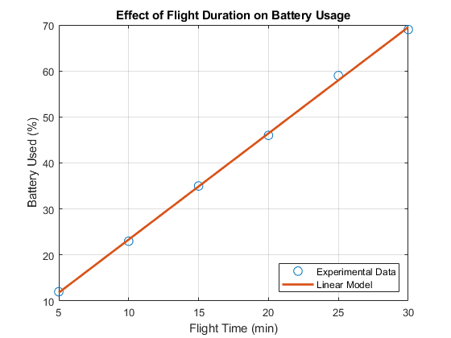
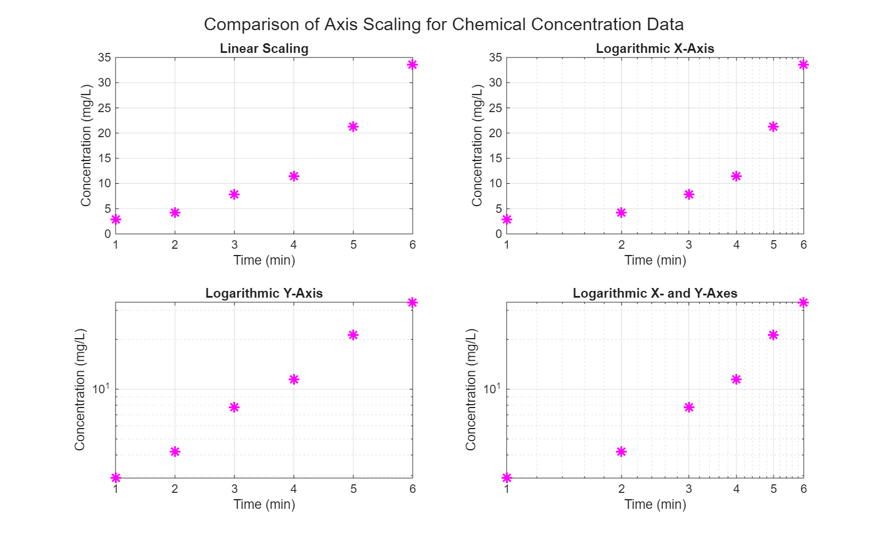
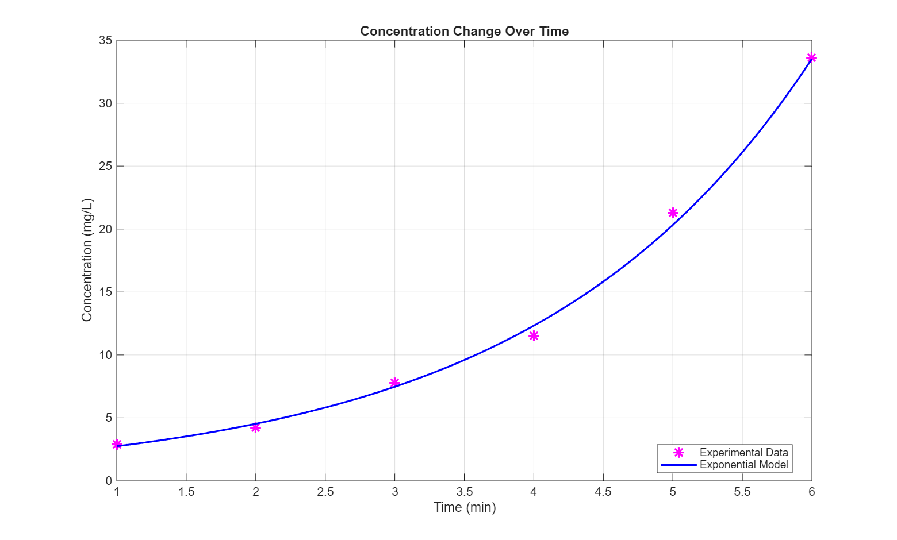

Nov 19, 2026 | 1577 words | 16 min read
8.1.1. PCMs: Regression and Analysis#
In ENGR 131, you used Excel and Python to develop linear regression models, evaluate how well those models represented experimental data, and make predictions. In this module, you will apply these same concepts using MATLAB and extend your skills to model nonlinear relationships.
Linear Regression#
Linear regression describes the relationship between an independent variable (\(x\)) and a dependent variable (\(y\)) using a best-fit line.
The general form of a linear regression model is:
where:
\(x\) is the independent variable.
\(\hat{y}\) is the predicted value of the dependent variable.
\(m\) is the slope of the regression line.
\(b\) is the y-intercept of the regression line.
The slope describes how much the predicted dependent variable changes for a one-unit increase in the independent variable. The y-intercept represents the predicted dependent variable when the independent variable equals zero. The meaning of these coefficients depends on the engineering context. In some situations, the y-intercept may not have a meaningful physical interpretation.
Least-Squares Regression#
Experimental data rarely fall perfectly along a straight line. Least-squares regression determines the slope and y-intercept of the line that minimizes the sum of the squared differences between the measured and predicted values.
In MATLAB, the built-in polyfit function can calculate the coefficients of a least-squares regression model.
coefficients = polyfit(x, y, 1);
The inputs to polyfit are:
x: Vector containing the independent variable values.y: Vector containing the dependent variable values.1: Degree of the polynomial. A value of1specifies a linear model.
The function returns a row vector containing the slope and intercept, respectively.
slope = coefficients(1);
intercept = coefficients(2);
Example: Battery Usage During Drone Flights#
An agricultural drone manufacturer is investigating the relationship between flight duration and battery consumption. Engineers collect the following experimental data:
Flight Duration (min) |
Battery Used (%) |
|---|---|
5 |
12 |
10 |
23 |
15 |
35 |
20 |
46 |
25 |
59 |
30 |
69 |
The engineers want to develop a linear model to predict battery consumption based on flight duration.
Step 1: Store the experimental data.
flight_time = [5, 10, 15, 20, 25, 30];
battery_used = [12, 23, 35, 46, 59, 69];
Step 2: Calculate the regression coefficients.
coefficients = polyfit(flight_time, battery_used, 1);
slope = coefficients(1);
intercept = coefficients(2);
The resulting model is approximately:
The slope indicates that battery consumption increases by approximately 2.31 percentage points for every additional minute of flight.
The intercept represents the model’s predicted battery consumption at zero minutes. Since the model is based on measured flight durations from 5 to 30 minutes, this value should be interpreted cautiously.
Calculating Expected Values#
Once the regression coefficients have been determined, the model can be used to calculate expected values.
In MATLAB, the polyval function evaluates a polynomial using its coefficients.
predicted_battery = polyval(coefficients, flight_time);
The inputs to polyval are:
coefficients: Vector containing the polynomial coefficients.flight_time: Values of the independent variable at which the model will be evaluated.
The output is a vector containing the expected battery consumption for each flight duration.
Alternatively, the predictions can be calculated directly using the regression equation:
predicted_battery = slope * flight_time + intercept;
Both approaches produce the same predicted values.
Evaluating Model Fit#
After developing a regression model, engineers must evaluate how well it represents the measured data. Three important quantities are used to evaluate model fit.
Residuals and Sum of Squared Errors (SSE)#
A residual is the difference between a measured value and its corresponding predicted value.
The sum of squared errors (SSE) measures the total squared residuals:
In MATLAB, SSE can be calculated using element-wise operations and the sum function.
SSE = sum((battery_used - predicted_battery).^2);
Notice the use of .^2 to square each residual individually.
Smaller SSE values indicate that the predicted values are closer to the measured values, although SSE depends on the scale and units of the data.
Total Sum of Squares (SST)#
The total sum of squares (SST) measures the variation in the measured dependent variable relative to its mean.
In MATLAB:
SST = sum((battery_used - mean(battery_used)).^2);
Coefficient of Determination (R²)#
The coefficient of determination, \(R^2\), describes the proportion of variation in the dependent variable explained by the regression model.
In MATLAB:
R_squared = 1 - SSE / SST;
For a least-squares linear regression model with an intercept, \(R^2\) ranges from 0 to 1.
Values close to 1 indicate that the model explains a large proportion of the variation in the measured data.
Values close to 0 indicate that the model explains little of the variation in the measured data.
For example, an \(R^2\) value of 0.95 indicates that approximately 95% of the variation in the dependent variable is explained by the model.
A high \(R^2\) value does not guarantee that the model is appropriate for every application. Engineers should also examine the data, the physical system, and the model’s limitations.
Using Regression Models for Predictions#
Regression models can be used to predict values through interpolation (within the range of measured data) or extrapolation (outside the range of measured data). Before using a regression model to make predictions, engineers must consider whether the model is appropriate for the engineering system and the range of values being evaluated.
For example, the drone manufacturer wants to predict battery consumption during an 18-minute flight.
prediction_time = 18;
predicted_usage = polyval(coefficients, prediction_time);
Because 18 minutes falls within the measured range of 5 to 30 minutes, this prediction is an example of interpolation.
Predictions outside the measured range are generally less reliable because the observed relationship may not continue beyond the experimental conditions.
Displaying and Visualizing Regression Results#
MATLAB’s fprintf function can be used to display the regression equation and goodness-of-fit calculations.
fprintf('Battery Usage Regression Model\n');
fprintf('Battery Used = %.3f * Flight Time + %.3f\n', slope, intercept);
fprintf('SSE = %.3f\n', SSE);
fprintf('SST = %.3f\n', SST);
fprintf('R-squared = %.4f\n', R_squared);
Regression models should also be visualized alongside the original experimental data.
plot(flight_time, battery_used, 'o');
hold on;
plot(flight_time, predicted_battery, '-');
hold off;
xlabel('Flight Time (min)');
ylabel('Battery Used (%)');
title('Effect of Flight Duration on Battery Usage');
legend('Experimental Data', 'Linear Model', 'Location', 'southeast');
grid on;
When presenting regression results, use markers to distinguish measured data from the fitted model. Include appropriate labels, units, and a legend.


Fig. 8.1 Experimental flight-time data compared with the fitted linear battery-use model.#
For additional guidance on plot formatting, refer to the MATLAB plotting materials from Data Manipulation and Visualization.
Non-Linear Regression#
Linear regression is useful when the relationship between two variables can be represented by a straight line. However, many engineering relationships are nonlinear, meaning the dependent variable does not change at a constant rate as the independent variable increases.
Nonlinear regression is used to develop mathematical models for these relationships. In this module, you will work with three common nonlinear model types: exponential, logarithmic, and power.
Common Nonlinear Models#
Model Type |
General Equation |
Description |
|---|---|---|
Exponential |
\(y = be^{mx}\) |
The dependent variable changes by a constant multiplicative factor for equal increases in \(x\). |
Logarithmic |
\(y = m\ln(x) + b\) |
The dependent variable changes linearly with the logarithm of \(x\). |
Power |
\(y = bx^m\) |
The dependent variable changes according to a power of \(x\). |
In these equations, \(m\) and \(b\) are model coefficients determined from experimental data. The meaning of these coefficients depends on the model and engineering application.
Unlike a linear model, these relationships generally produce curved plots when both axes use linear scaling.
Identifying Nonlinear Relationships#
Before developing a regression model, engineers should visualize the experimental data to identify patterns and determine which mathematical relationship may be appropriate.
MATLAB provides several plotting functions that use different axis scales.
MATLAB Function |
X-Axis Scale |
Y-Axis Scale |
Relationship That Appears Linear |
|---|---|---|---|
|
Linear |
Linear |
Linear |
|
Logarithmic |
Linear |
Logarithmic |
|
Linear |
Logarithmic |
Exponential |
|
Logarithmic |
Logarithmic |
Power |
A logarithmic axis can make certain nonlinear relationships appear approximately linear. This helps engineers identify candidate model types before calculating regression coefficients.
Example: Comparing Axis Scales#
Suppose engineers are studying how the concentration of a substance changes over time. They collect the following experimental data:
% Data from how a concentration of a substance changes over time
time = [1, 2, 3, 4, 5, 6]; % minutes
concentration = [2.9, 4.2, 7.8, 11.5, 21.3, 33.6]; % mg/L
To investigate the relationship, create a figure with four subplots using different axis scales.
figure(1);
subplot(2,2,1);
plot(time, concentration, 'm*','MarkerSize',9,'LineWidth', 1.5);
title('Linear Scaling');
xlabel('Time (min)');
ylabel('Concentration (mg/L)');
grid on;
subplot(2,2,2);
semilogx(time, concentration, 'm*','MarkerSize',9,'LineWidth', 1.5);
title('Logarithmic X-Axis');
xlabel('Time (min)');
ylabel('Concentration (mg/L)');
grid on;
subplot(2,2,3);
semilogy(time, concentration, 'm*','MarkerSize',9,'LineWidth', 1.5);
title('Logarithmic Y-Axis');
xlabel('Time (min)');
ylabel('Concentration (mg/L)');
grid on;
subplot(2,2,4);
loglog(time, concentration, 'm*','MarkerSize',9,'LineWidth', 1.5);
title('Logarithmic X- and Y-Axes');
xlabel('Time (min)');
ylabel('Concentration (mg/L)');
grid on;
sgtitle('Comparison of Axis Scaling for Chemical Concentration Data');
The semilogy plot should show an approximately straight-line relationship, suggesting that an exponential model may be appropriate.


Fig. 8.2 Comparison of axis scaling methods to identify an appropriate nonlinear regression model.#
This approach provides an initial indication of the relationship between variables. However, the apparent straightness of a plot does not guarantee that a particular model is appropriate. Engineers must also consider the physical system and evaluate the resulting model.
Linearizing Nonlinear Data#
Although nonlinear models produce curved relationships, some can be transformed into linear equations.
Linearization is the process of transforming variables so that a nonlinear relationship can be represented by a straight line.
Once the data have been linearized, MATLAB’s polyfit function can be used to determine the coefficients of the transformed model.
The coefficients can then be converted back into the original nonlinear equation.
Exponential Model#
An exponential model has the general form:
Taking the natural logarithm of both sides gives:
This equation is linear in \(x\) and \(\ln(y)\).
To develop an exponential regression model in MATLAB:
linearized_y = log(concentration);
coefficients = polyfit(time, linearized_y, 1);
m = coefficients(1);
b = exp(coefficients(2));
MATLAB’s log function calculates the natural logarithm, while exp calculates the exponential function with base \(e\).
The original nonlinear model can then be evaluated using:
predicted_concentration = b * exp(m * time);
Notice that the intercept returned by polyfit is \(\ln(b)\), not \(b\). Therefore, the exp function is required to recover the original coefficient.
Logarithmic Model#
A logarithmic model has the general form:
This relationship is already linear in \(\ln(x)\) and \(y\).
To develop a logarithmic regression model in MATLAB:
linearized_x = log(time);
coefficients = polyfit(linearized_x, concentration, 1);
m = coefficients(1);
b = coefficients(2);
The original model can be evaluated using:
predicted_concentration = m * log(time) + b;
Unlike the exponential model, the coefficients returned by polyfit do not require additional transformations.
Power Model#
A power model has the general form:
Taking the natural logarithm of both sides gives:
This equation is linear in \(\ln(x)\) and \(\ln(y)\).
To develop a power regression model in MATLAB:
linearized_x = log(time);
linearized_y = log(concentration);
coefficients = polyfit(linearized_x, linearized_y, 1);
m = coefficients(1);
b = exp(coefficients(2));
The original model can then be evaluated using:
predicted_concentration = b * time.^m;
Notice the use of .^ to raise each element of the time vector to the power m.
Comparing Linearization Methods#
The following table summarizes the transformations and coefficient calculations for all three nonlinear models.
Model Type |
Original Equation |
Inputs to |
Recovering Coefficients |
|---|---|---|---|
Exponential |
\(y = be^{mx}\) |
|
|
Logarithmic |
\(y = m\ln(x)+b\) |
|
|
Power |
\(y = bx^m\) |
|
|
In each case, p represents the coefficient vector returned by polyfit.
Important: Logarithmic transformations require positive input values. Before using log(x) or log(y), verify that the values being transformed are greater than zero.
Visualizing the Nonlinear Model#
After calculating the model coefficients, plot the original experimental data alongside the nonlinear model using the original axis scales.
For the exponential concentration example:
model_time = linspace(min(time), max(time), 100);
model_concentration = b * exp(m * model_time);
figure(2);
plot(time, concentration,'m*','MarkerSize',9,'LineWidth', 1.5);
hold on;
plot(model_time, model_concentration, 'b-','LineWidth',1.5);
xlabel('Time (min)');
ylabel('Concentration (mg/L)');
title('Concentration Change Over Time');
legend('Experimental Data', 'Exponential Model', 'Location', 'best');
grid on;
The use of linspace creates additional points for a smooth model curve.
When evaluating the model, consider how closely the curve follows the experimental data and whether the model is consistent with the expected behavior of the engineering system.


Fig. 8.3 Exponential regression model fitted to experimental chemical concentration data over time.#
A model that appears linear after transformation is not necessarily the best model for the original data. Because logarithmic transformations change how errors are represented, engineers should also evaluate the model’s predictions on the original data scale.